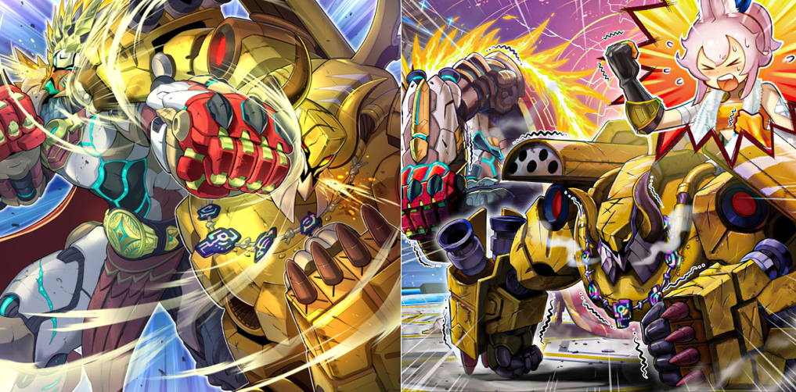

Having watched Ecclesia and Albaz fly off to Mount Swordsoul, Kitt and the Springans decide they can't just sit on the sidelines while their new friends take on the Despians. Kitt dismantles Bearbrumm to make a Springan mech suit, and then the group returns to the Land of Iron and Steel seeking weapons like those the Tri-Brigade had used against the Dogmatika and Despians.
The bullets from the firearms that the "Tri-Brigade" uses have the power to restrain the miracles used by the Knights of Holy Teachings. The "Springans" depart on a journey to find the origin of that power.
The party arrives to a "Discolosseum" powered by volcanic energy. Much like the name says, the spherical honcho is standing atop of a mountain, immersed in fights as usual. "In order to challenge dat jerk, ain't no other way than to kick the butts of all those knucklehead piles of iron. We countin' on you, our Captain 'Sargas'"!
"Endless Engine Argyro System" Used to be an A.I. with the purpose of repairing the "Disc". As a result of the influence of the volcanic energy it absorbed, it became a being that now possesses a fighting instinct.
Aboard the Therion Discolosseum, Captain Sargas steps forward and takes on the Therions one by one.
Sargas is almost defeated by "King" Regulus, but is cheered on by his comrades and ultimately emerges victorious.

The Argyro System is angered by this and releases the Sprights, electrical sprites with a resemblance to the soot sprite Springans themselves.
The Sprights' energy overloads Regulus, causing him to go berserk as Therion Irregular.
The Springans join the fray and an all-out clash ensues. Sprights Blue and Red get captured within Sprind, a device built by Kitt using parts from the dismantled Sprind the Irondash Dragon.
In the end, Regulus changes sides and joins the Springans, as he and Sargas start landing dual blows against Gigantic Spright.
Meanwhile, "Albaz" was defeated in the power resonance with his doppelganger "Aluber", and was on the verge of annihilation. In the middle of their unification, being reborn in this world as the dragon king "Alba-Lenatus", "Albaz" perceived the cries of the grieving heart of "Ecclesia". Despite having most of their power stolen by "Aluber", the fallen "Chengying" and "Kosmochlor" mustered their remaining power at the end of the fierce struggle. Turning his feelings into an "Icejade" blade, "Albaz" managed to recover his form and break apart from the dragon. Gasping in the devastated battlefield, "Albaz" yelled the name of "Ecclesia", yet she was nowhere to be found, and thus, echoes of his voice reverberated throughout the "Sacred Summit" in vain.
Why did she leave "Dogmatika"? Why did we part ways at the "Great Sand Sea"? "Ecclesia" embraced the body of "Flerudelis", along with her regrets. — This little bird, nurtured with tender care within the confines of a miniature garden, was set free into the world beyond, with its heart growing more beautiful and even stronger. For if it hadn't, the moment an imperceptible deep sorrow, regret, and despair were born in the young girl's heart, she would lose the protection of the "Icejades", and the "Brands" would begin creeping further. The cold arms embracing the heartbroken "Ecclesia" were those of the first Virtuous "Quem", who had been resurrected. As well as "Quaeritis", the incarnation of the cycle of love and despair of the Virtuous Vestals. They began melding as one, as if leaning on each other, or as if relying on each other. The feelings of "Dramaturge" at the time: «Oh, what an immaculate scenery. Of all my creations so far, this particular one warrants the label of magnum opus. This most pristine scene shall become the initial dogmatik icon of this world!»
"Nexus" used to be enshrined on the holy temple of "Dogmatika". The doors of its transfigured form, "Proskenion", slowly opened, and from them, a new figure appeared, in the form of "Cartesia", the most immaculate and chaotic being, created by the combination of 666 of the most pure souls, crushed by love and despair. Although she took on the form of a sweet young girl reminiscent of "Ecclesia", she was an amalgamation of grudges and her body lacked a true controller. Her vacant eyes were constantly open. The dimly-glowing mark on her forehead became the dark crystallization of a 'Hole' itself after absorbing the "Brands" of every Virtuous, and was released from its temporary body.
With the awakening of "Blazing Cartesia, the Virtuous", the interior of "Despia, Theater of the Branded" began to pulsate. "Dramaturge" used his powers amplified by the "Brands" to open countless 'Holes' in the firmament. Gigantic demi-dragons appeared from the Abyss that was swallowed up by the void. They were the sovereigns of what laid beyond the 'Hole', in an era where mortals existed, gods existed, and a world existed, ruled through force. Marionette dragon kings that were mere shadows of their former selves. Even being bound by chains, their strength was enough to tear up the skies and make the earth tremble. "Cartesia" looked upon this sight, like a mother being affectionate to her children.
Having taken Albaz's brands, Aluber is now more powerful than ever as The Bystial Lubellion. He uses his new power to evolve the Despian Proskenion yet again, creating Alba Los.
Almost as if he was being drawn there, "Albaz" returned to that land. "Great Sand Sea - Gold Golgonda". The ones awaiting there were the remaining "Tri-Brigades". "Mercourier", the mechanical bird that "Albaz" released during the previous fight, had reached out to them. And thus, each of them assembled the forces of the 'Fang Tribe', the 'Claw Tribe', and the 'Wing Tribe' that they commanded, one after the other, into an alliance. "Albaz" was certain: the remnants of the power inside of him, and the dragonic power inside of that guy, were calling out for each other. What awaited the glaring "Albaz" was a colossal shadow eclipsing the skies, as if dominating them. It was the castle of the "Despia", unleashing darkness.
"Albaz" trembled with fear at the might of his enemies. Even "Supreme Sovereign Serpent of Golgonda" appeared from underground. This former Sovereign, who had been expelled from the Sacred Summit by "Chengying" and decayed into a voracious creature, combined with its kindred spirit "Longyuan", with both of them sharing their ambitions to expand their rule, ultimately turning into a dragon of evil flames
Similarly, "Cartesia", who was watching over the dragons dispatched from the 'Holes', turned herself into a dragon of "Brands" and departed from the castle.
And then, from the depths of the "Theater of the Branded", the doors to a catastrophe were slowly, but certainly opening. What could be glimpsed inside was "Dramaturge" completing its transformation, far beyond what could be called human, and could only be deemed as divine.
And thus began the decisive battle. Considering the power difference, a battle in name only, for it would have been a one-sided slaughter. However, what began palpitating was a wave of dreadful cold and wrath. Rapidly increasing her powers through her deep resentment, the "Icejade Empress" manifested herself in this land, chasing after "Longyuan".
For "Aegirine" and "Aegirocassis" who had descended to the "Great Sand Sea", their red eyes were as one, fixated on only one target: the one who had eradicated their families, "Longyuan".
No matter how many times they were defeated, the vanguard of the "Despia" would be brought back to life by the power of "Dogmatika Alba Zoa", only to be atrociously transfigured. Knowing the fact that these were once the people of "Dogmatika", the allied forces hesitated to point their guns towards civilians, even if they were of an enemy nation. However, the attacks of the "Bystials" commanded by "Alba Los" scorched the "Despia" and the allied forces all the same, almost as if sneering at their naivety. But then, the loudest rumble of this decisive battle began resounding across the "Great Sand Sea", ripping the clouds asunder, as one group entered the battlefield: it was the new King Captain... "Gigantic "Champion" Sargas", and the "Springans", fully loaded with the "Spright" energy!
«No matta' the time or place, if our buds be needin' help, we don' need any other excuse!» Amidst their hot-blooded battle, "Regulus" and "Sargas" realized their emotions were one and the same. Through the "Spright" energy, which was a fusion of their respective roots, namely the thunder of the disc and the flames of the volcano, both champions combined into a single entity. And by incorporating the massive frame of the "Flagship Exblowrer", they completed their evolution into the largest, strongest entity!
The "Springans" stockpiled the "Spright" energy in their bodies and exploded all over "Golgonda". Some of them scattered energy around, halting the movements of the "Despia" vanguards, while others boldly flew through the wings of the demi-dragons, piercing them full of holes. With the "Springans" bursting into the battlefield, bragging about how each one was the flashiest one of them all, the movements of "Alba Los" became slightly more sluggish. It was at that very moment that two shining energy beams pierced through the two dragon gun turrets of "Alba Los", with incredible speed and power. One of them was the Champion Belt Cannon unleashed by "Sargas". The other was a single strike from the commander of the "Tri-Brigade" who returned to the battlefield: "Shuraig". Invaders, it's once again time for you to hear the roar of the Iron Beasts!
"Shuraig" spread his wings once again by equipping a repurposed superheavy armament in his left arm that had been injured by "Quaeritis". All for a final blow to take out the enemies that stole his comrades from him.
Amidst the hectic fight, "Kitt" jumped into the fray and called for "Albaz". She was riding "Rindbrumm", a mechanical dragon made out of iron. She created it after the fight in the Iron Country by fusing the two prototypes "Sprind" and "Bearbrumm", and combining the powers of the Abyss and "Spright" energy. "Rindbrumm" picked up "Albaz" from the ground, and with him now riding it, "Rindbrumm" rushed towards "Lubellion", who had lost "Alba Los". As the two specialized "Bucephalus" cannons fired their blasts at "Lubellion", "Cartesia" jumped in front of the attack. When she noticed a hostile attack was directed towards the dragon with the divine flames, the ruler of the Abyss, she who had been reborn as the "Branded" Virtuous had no choice but to sacrifice herself.
"Aluber" was about to receive the blast. However, the attack was then directed towards the Virtuous who jumped in front of the attack, without any sense of danger.
With no time to think, "Albaz" jumped off the "Rindbrumm". With all of his might, he yelled her name.
«ECCLESIA!!»
When he held out his hand for her for the first time, she hesitated but ultimately accepted it. And from that point during their journey, she held out her hand for him countless times. He had to make sure that their hands broken apart by the war would be reunited once again, no matter what...!
"Albaz" desperately followed after the girl falling after being exposed to the blast. He desperately stretched out his hand towards the most precious thing in the world for him.
When the hand of "Albaz" reached the falling "Cartesia", a brilliant light enveloped the two of them. Perhaps it was the dragonification power of "Albaz" that was supposedly stolen, or the power of "Cartesia", or maybe even a different miracle altogether... within this space filled with the light, "Albaz" successfully took back "Ecclesia" from "Cartesia". As the light faded, a new dragon king, "Albion the Sanctifire Dragon", stood there wrapped in beautiful yet ferocious golden flames.
"Albion" released the golden flames of its body. Mysterious flames capable of reaching every corner of the battle-torn "Golgonda"... however, there were none that were scorched by it, and instead, the malicious forms of the vanguards of the "Despia" were contained, enveloped by light, and eventually transformed back to their past human forms.
There were beings who had violent reactions to seeing the golden flames that illuminated the battlefield. It was "Dogmatika Alba Zoa" and the demi-dragons releasing their powers from the castle. "Maximus" was supposed to guide the people in the great nation of "Dogmatika". Yet he himself was actually the most crazed zealot. «Why is that dragon coming to life? What is that guy's other half, Aluber, doing to my other half, the Assassin? How many centuries have I spent building up that world since entering this land? This is but a prelude to my scenario. From now on, thousands of corpses shall form mountains, the blood of billions shall flow as rivers, and I shall welcome the god that guides me to his throne created with the arts of death.» Overwhelmed by his desire for the divine, "Dogmatika Alba Zoa" devoured the demi-dragons around him in a fit of madness, trying to reach godhood himself.
After obtaining the power of the demi-dragons he devoured, "Dogmatika Alba Zoa" debased into "Bystial Dis Pater", and in order to make sure there were no more unexpected eventualities, he turned his sights on "Albion". Just in that moment, a red lightning strike rumbled out from the land where "Cartesia" fell. After losing the final vessel and cornerstone that was "Ecclesia", "Cartesia" could no longer maintain its form and was rapidly crumbling down. In the midst of this fracturing, the soul of the most powerful Virtuous took control. — Protecting "Ecclesia". That thought became the Soul of her heart, and it began giving shape to the crumbling body of "Cartesia" once again. Her own shape, and the shape of the knight's armor and Sword that were the symbol of her oath. This was the first and final "Swordsoul" awakened by "Fleudelis".
"Dis Pater" raged madly. However, the battle was heading towards its ending. The most powerful explosion released by "Sargas" took down the giant castle of "Despia", while thousands of the most powerful lightning strikes of "Fleurdelis" became one to strike "Dis Pater". And finally the high-speed strike by "Shuraig" inflicted a mortal wound in the form of a gaping hole in the crumbling "Dis Pater".
"Dis Pater" was scorched by the golden flames of "Albion", and it, along with the demi-dragons it had consumed, turned to ash and faded away. Observing that scene out of the corner of his eye, "Aluber" slowly descended. He gave the being prostrating before him words of gratitude and praise. Just like a jester, he seemed very, very pleased...
Days and months have gone by since the allied forced managed to overturn an impossible war and achieved victory in the Great War. However, the scars of war carved in the Northern Land attested to the size of the losses that were incurred. Even still, those that were wounded, those that remained, and everyone else kept facing forward, choosing to move towards the future. The new Empress of Ice has sealed her sworn enemy, locking him in a lonely cradle. The Mother Zoa sleeping in the further depths of the "Icejade Cenote" shut all of the "Sacred Summit" in cold ice, much like the heart of "Aegirine". Solidly and firmly, so that it won't crumble ever again...
A girl walked alone the path ruined by the disturbance, uttering words and turning around, almost as if she was traveling along with someone else. After sinking the soul of "Fleurdelis" to the lowest depths once again, "Quem", who became the unifier of the Virtuous Vestals, no longer had her lonesome expression, and turned her back on the great nation that had lost its glory...
It was an unexpected, yet inevitable birth. This entity had no memories, yet that was only reasonable. The energy unleashed by the "Sprights" in the "Great Sand Sea" took the remains of "Alba Los" as its vessel and gave birth to a single persona. An unwelcome byproduct of the Argyro System, which had no progenitors, yet possessed a will of its own, began marching, almost as if guided by something.
As one would expect of 'Golgonooza', the city once ruled by iron and arts: the coming of yet another interesting incident. A story that follows the script perfectly is truly the dullest thing. I guess I'll keep an eye on what role the world is reserving for this newborn Fallen. No matter what fate has in store, I hold the Seed of Miracles.
The scars of war hadn't healed, and the resentments still lingered. However, the survivors of the "Tri-Brigade" and the reformed 'Dogmatika Knights' made peace, as people moved towards rebuilding and starting a new page. Meanwhile, the young boy and girl had been making their preparations and finally resolved to depart on a journey. A journey to take back what was beloved to them. This continent was still full of mysteries and powers. Sure to be packed with dangers beyond what they had encountered so far in their travels. The future of the young boy and girl was sure to be filled with new memories, as they got to experience the wider world...
The extinction of the great northern nation of "Dogmatika", which has left its name in history in what would later be known as the 'Golgonda War', was but a mere foreword to a greater war that would eventually involve the entire continent. Some were in anguish about the defiled land left behind, while others decided it was time to step out from the shadows and into the forefront. The pulse of a great power always begat new conflict, and whether the people of this world wished for it or not, the times continued to move forward, into evermore chaos.